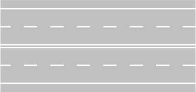
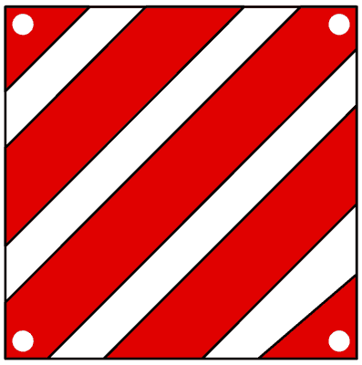
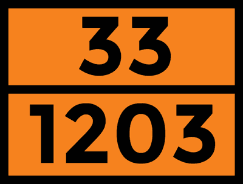
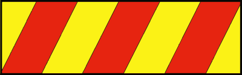

المفاهيم العامة، تصنيفات الطرق والمركبات، والواجبات
المرجع الاستراتيجي المعتمد الأول لشهادة Patente B: إتقان الفرق الجوهري بين الطريق الشامل (Strada) ونهر الطريق (Carreggiata)، فك شفرات الحارات والمنشآت الجانبية، الشجرة الكاملة لتصنيف المركبات ومواعيد الفحص الدوري (Revisione)، وكشف الكلمات الخبيثة في أسئلة الامتحان.
المقطع العرضي التفاعلي الشامل للطريق (Strada vs Carreggiata)
نهر الطريق (Carreggiata) هو الجزء الأساسي من الطريق (Strada) المخصص حصرياً لحركة وسير المركبات. يتكون من حارة سير واحدة أو أكثر. ما ينتمي إليه: حارات السير العادي، حارات التجاوز، ومعابر المشاة والدراجات المخططة على الأسفلت. ما يستبعد منه: الرصيف (Marciapiede)، قارعة الطريق (Banchina)، حارة الطوارئ (Corsia di emergenza)، ومسارات الدراجات المستقلة.
محاكي الطرق والكاريدجات الوزارية (Figures 550, 552, 562)

نهر طريق واحد ذو اتجاهين وأربع حارات
- عدد أنهار الطريق: نهر طريق واحد فقط (Una sola carreggiata) يضم الاتجاهين معاً ويفصل بينهما خط متصل مزدوج.
- توزيع الحارات: حارتان لكل اتجاه سير؛ الحارة اليمنى للسير العادي (Marcia ordinaria) والحارة اليسرى للتجاوز (Corsia di sorpasso).
- فخ الامتحان الوزاري الأكبر: يُسمح بالتجاوز في المنعطفات والتلال (Sorpasso consentito anche in curva e sui dossi) لأن التجاوز يتم داخل نفس الاتجاه دون غزو المسار المعاكس أو اجتياز الخط المتصل!
- المحظورات: يُمنع منعاً باتاً الرجوع للخلف أو الدوران للخلف (Inversione di marcia) بعبور الخط المزدوج المتصل.
شجرة تصنيف المركبات التفاعلية (Classificazione dei Veicoli)
الدراجات الخفيفة (سيكلوموتوري)
مركبات خفيفة ذات عجلتين أو ثلاث عجلات، خاضعة لحدود فنية صارمة مصنعياً.
| سعة المحرك (بنزين) | ≤ 50 cm³ |
| قدرة المحرك (كهربائي) | ≤ 4 kW |
| السرعة القصوى المصنعية | ≤ 45 km/h |
| الفحص الدوري | 4 سنوات ثم كل سنتين |
- فخ: لا تصنف كـ Motoveicoli؛ إذا تجاوزت سرعتها 45 كم/س تصنف دراجة نارية Motociclo.
الكواد الخفيف (الميكروكار)
سيارات صغيرة جداً بـ 4 عجلات تعامل قانونياً معاملة الـ Ciclomotori.
| الوزن فارغاً (Massa a vuoto) | ≤ 350 kg (425 كهربائي) |
| سعة المحرك (بنزين) | ≤ 50 cm³ |
| القدرة القصوى | ≤ 4 kW (أو 6 kW) |
| السرعة القصوى | ≤ 45 km/h |
- فخ: يمنع قيادتها بدون رخصة؛ تقاد برخصة AM ابتداءً من عمر 14 سنة.
الكواد غير الخفيف (رباعي العجلات)
مركبات رباعية العجلات تصنف ضمن فئة الـ Motoveicoli (وليست أوتوفيتورا).
| الوزن فارغاً (أشخاص) | ≤ 400 kg |
| الوزن فارغاً (بضائع) | ≤ 550 kg |
| القدرة القصوى للمحرك | ≤ 15 kW |
| السرعة القصوى المصنعية | ≤ 80 km/h |
- فخ: يلزم ارتداء الخوذة (Casco) إذا كان الهيكل مكشوفاً بدون كابينة وأحزمة أمان.
سيارة الركوب الخاصة
مركبة بمحرك ذات 4 عجلات مخصصة حصراً لنقل الأشخاص بحد أقصى محدد للمقاعد.
| أقصى عدد للمقاعد | 9 مقاعد (شاملة السائق) |
| نقل البضائع كهدف أساسي | غير مسموح (مخصصة لأشخاص) |
| سحب مقطورة خفيفة (≤750kg) | مسموح برخصة B |
| الفحص الدوري | 4 سنوات ثم كل سنتين |
- فخ: إذا زاد عدد المقاعد عن 9 تصنف حافلة (Autobus) وتتطلب رخصة فئة D.
السيارة السكنية المتنقلة (كامبر)
مركبة خاصة بمحرك مجهزة بهيكل للسكن والإقامة (Alloggio).
| التصنيف القانوني | Autoveicolo (سيارة ذات محرك) |
| هل هي مقطورة؟ | ليست مقطورة (Non è un rimorchio) |
| النوم بالسرير أثناء السير | ❌ ممنوع منعاً باتاً |
| الفحص الدوري (≤3.5t) | 4 سنوات ثم كل سنتين |
- فخ: لا يجوز للركاب الوقوف أو النوم بالسرير أثناء السير؛ يجب الجلوس وربط الأحزمة!
الحافلات المفصلية
حافلة ركاب تتكون من قسمين صلبين متصلين بمفصل دائم يسمح بالعبور بينهما.
| التصنيف القانوني | Autoveicolo (مركبة واحدة متصلة) |
| هل تعتبر مقطورة؟ | ليست شاحنة بمقطورة (Non è treno) |
| الفصل بين الأقسام | غير قابل للفصل العادي |
| الفحص الدوري | كل سنة (Annuale) |
- فخ: لا تعتبر مجموعة مركبات (Complesso di veicoli) لأنها وحدة مفصلية متكاملة.
المقطورات والكرفان والرولوت
مركبات بدون محرك تسحب بواسطة مركبة أخرى بمحرك (Motrice).
| مقطورة خفيفة (Leggero) | الوزن الإجمالي ≤ 750 kg |
| مقطورة ثقيلة | الوزن الإجمالي > 750 kg |
| الكرفان (Caravan / Roulotte) | مقطورة سكنية مسحوبة |
| عربة الأمتعة (Carrello appendice) | جزء مكمل للسيارة ولا يسجل منفرداً |
- فخ: يُحظر نهائياً تواجد أي شخص داخل الـ Caravan أثناء حركة السيارة على الطريق!
الآلات الزراعية والإنشائية
آلات مخصصة للعمل الزراعي أو أعمال الحفر والبناء وخدمات الطرق وصيانة الثلوج.
| الآلات ذات الإطارات (Gommate) | السرعة القصوى 40 km/h |
| الآلات المجنزرة (Cingolate) | السرعة القصوى 15 km/h |
| نقل الركاب أثناء السير | فقط المقاعد المعتمدة برخصة السير |
| رخصة القيادة | رخصة A1 / B حسب الوزن والأبعاد |
- فخ: لا يسمح للآلات الزراعية بحمل حمولات تجارية عامة؛ عملها مقيد بالنشاط الزراعي.
حاسبة ومصفوفة مواعيد الفحص الدوري (Revisione Periodica)
نتيجة الحساب القانوني
4 + 2 + 2--
بطاقة كشف الكلمات المفخخة الوزارية (Parole Trabocchetto)
كلمة تقييد وإقصاء متعمدة؛ تلغي استثناءات القانون وحالات الطوارئ المسموحة.
التعميم المطلق يتنافى مع قواعد المرور الإيطالية القائمة على تقييم الظروف ونوع المركبة.
تقتضي نفياً قاطعاً لا يحتمل أي استثناء في القانون الإيطالي كاملاً.
تصف القاعدة القانونية الأصلية مع الاعتراف الصريح بوجود استثناءات معتبرة.
أداة فرز دقيقة تفصل بين ما يدخل في المفهوم وما يخرج عنه هندسياً.
تعني "عند الموضع مباشرة" وتميز بين السلوك عند النقطة وبين المسافة السابقة لها.
تطلق الحكم الجغرافي دون مراعاة لاختلاف تصنيفات الطرق وإشارات المرور.
تخلط بين أنواع المركبات ذات المتطلبات والأوزان والسرعات المختلفة تماماً.
اللوحات والعلامات الإرشادية الخاصة بالباب 01

لوحة الحمولة البارزة للخلف
- لوحة مربعة عاكسة ذات خطوط مائلة بيضاء وحمراء توضع خلف المركبة عند بروز الحمولة للخلف.
- البروز الخلفي مسموح بحد أقصى 3/10 من طول المركبة (Massimo 30%).
- إذا كانت الحمولة بعرض المركبة كاملاً توضع لوحتان في طرفي الحمولة مشكلتين حرف V مقلوب.

لوحة نقل المواد الخطرة (برتقالية)
- لوحة برتقالية عاكسة توضع أمام وخلف المركبات الصهريجية الناقلة للمواد الخطرة (ADR).
- الرقم العلوي يشير إلى نوع الخطر (Pericolo)، والرقم السفلي يشير إلى رمز المادة (Codice sostanza).
- إذا كانت اللوحة برتقالية ملساء بدون أرقام فإنها تشير عموماً لنقل مواد خطرة في طرود.

لوحات عاكسة للشاحنات الثقيلة
- لوحات مستطيلة ذات خطوط مائلة صفراء عاكسة وحمراء فلورية.
- توضع إجبارياً في مؤخرة شاحنات نقل البضائع ذات الوزن الأقصى المحمل يتجاوز 3.5 طن.
- فخ وزاري: لا توضع على سيارات الركوب الملاكي أو الشاحنات الخفيفة ≤ 3.5 طن.

لوحات عاكسة للمقطورات الثقيلة
- لوحات ذات خلفية صفراء عاكسة يحيط بها إطار أحمر فلوري كامل.
- مخصصة حصراً للمقطورات وأنصاف المقطورات (Rimorchi e semirimorchi) ذات وزن > 3.5 طن.
- الفرق الحاسم: الخطوط المائلة (Fig 304) = شاحنات؛ الإطار الأحمر المصمت (Fig 305) = مقطورات!

إشارة منفذ الجراج والعقار
- ممر يربط الطريق العام بملكية خاصة تتيح دخول وخروج المركبات المركونة بالداخل.
- التوقف المؤقت (Fermata): مسموح به تماماً لإنزال أو صعود ركاب بشرط عدم التعطيل.
- الوقوف الركن (Sosta): ممنوع منعاً باتاً وتخضع المركبة المخالفة للسحب بالونش (Rimozione forzata).
فخاخ الكويز الوزارية المباشرة (Trappole dei Quiz)
معجم المصطلحات الصوتي التفاعلي (Glossario Audio)
المساحة الكلية المفتوحة لحركة المشاة والحيوانات والمركبات وتضم الكاريدجاتا والأرصفة.
الجزء المخصص حصراً لحركة سير المركبات فقط ويتكون من حارة أو أكثر.
شريط طولي يتسع لصف واحد من السيارات ودائماً اتجاه واحد فقط.
شريط جانبي خارج الخط الأبيض المتصل خارج الكاريدجاتا للمشاة والطوارئ.
مخصص للمشاة؛ يمنع وقوف أو سير السيارات عليه إلا بخطوط بيضاء مرسومة.
منشأة مرتفعة لحماية المشاة وصعود ركاب الترام وتتيح التجاوز يميناً.
مساحة لتوجيه وفصل تيارات السير؛ يُمنع السير أو الوقوف عليها نهائياً.
حاجز مادي ثابت غير قابل للاجتياز يقسم الطريق إلى نهري طريق منفصلين.
مدخل الملكية الخاصة؛ يسمح بالتوقف المؤقت Fermata ويحظر الوقوف Sosta.
تقاطع سطحي على نفس المستوى مع سكة حديد مزود بحواجز وأضواء حمراء.
المشاة، الأطفال، كبار السن، ذوو الإعاقة، وراكبو الدراجات.
أداة استثناء تفصل بين ما ينتمي وما يخرج عن المفهوم في أسئلة الامتحان.
تحدد الموضع الدقيق المحدد لحدوث المنع كمنع التجاوز عند نقطة التقاطع.
سير متوازٍ في نفس الحارة، محظور تماماً للدراجات في أسئلة الوزارة.
حارة أو مسار مخصص لأكثر من استخدام كالترام والسيارات معاً.
منشأة تعلو عن مستوى الطريق كالرصيف المرتفع والمطبات ورصيف الأمان.